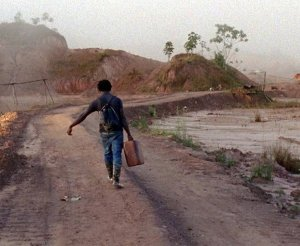

Good Luck

Ben RussellFR / DE 2017 – Super-16 auf HD – 143 min – Serbian, Saramaka
German Premiere
B: Ben Russell – DOP: Ben Russell, Steadicam: Chris Fawcett – E: Ben Russell, Maja Tennstedt – S: Jakov Munižaba, Simon Apostolou, Nicolas Becker – P: KinoElektron (FR), CaSk Films (DE) – D: Stray Dogs
www.dimeshow.com
Filmed between a state-owned large-scale underground mine in the war-torn state of Serbia and an illegal mining collective in the tropical heat of Suriname, GOOD LUCK is a visceral documentary portrait of hope and sacrifice in a time of global economic turmoil. Formed between dark and light, cold and heat, North and South, GOOD LUCK immerses its viewer in the precarious natural and social environments of two distinct labor groups so as to better understand the bonds that men share. Here is the human foundation of capital, revealed.
friday 6 oct 9.00 p.m. filmmuseum münchen
Ben Russell * in 1976 in Massachusetts, Russell now lives in Los Angeles. He became known through his series Trypps (2005–10), in which he first worked with the physical experience of noise music. Nevertheless he quickly moved on “to include the various poles of action painting, avant-garde cinema, portraiture, stand-up comedy, global capitalism, and trance dance à la Jean Rouch,” as he notes. Several feature-length films, installations, live performances, and short films have followed. And, as the founder of the Magic Lantern screening series (among many others), Russell has conceived of and organized over one hundred thematic film and video programs.
Films The Ataraxians, Extra Terrestrial 2004 – Trypps #1, The Red and the Blue Gods, The Twenty- One Lives of Billy the Kid 2005 – Trypps #2, Michoacan: La Muerte / El Traidor 2006 – Peace Noise, Trypps #3 2007 (5. UX) – Trypps #4, Tjúba Tén / The Wet Season 2008 – Let Each One Go Where He May 2009 (5. UX) – Trypps #7 (Badlands) 2010 (6. UX) – A Spell to Ward Off the Darkness 2013 (mit Ben Rivers, 9. UX)
GOOD LUCK wurde auf der Documenta14 als 5-Kanal-Installation gezeigt.